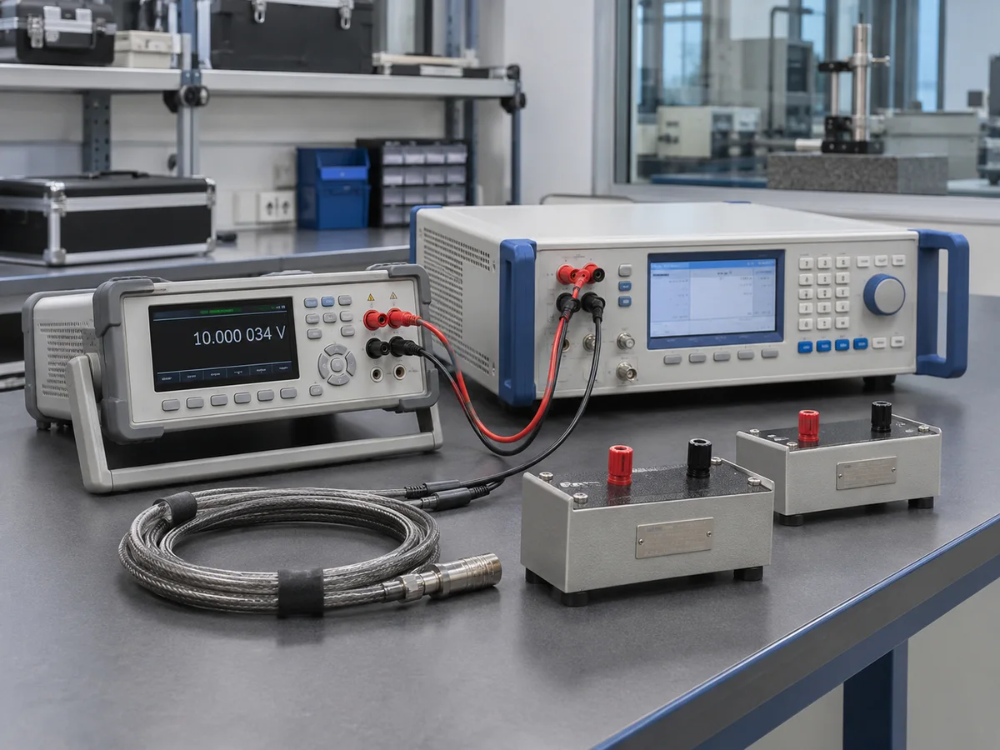
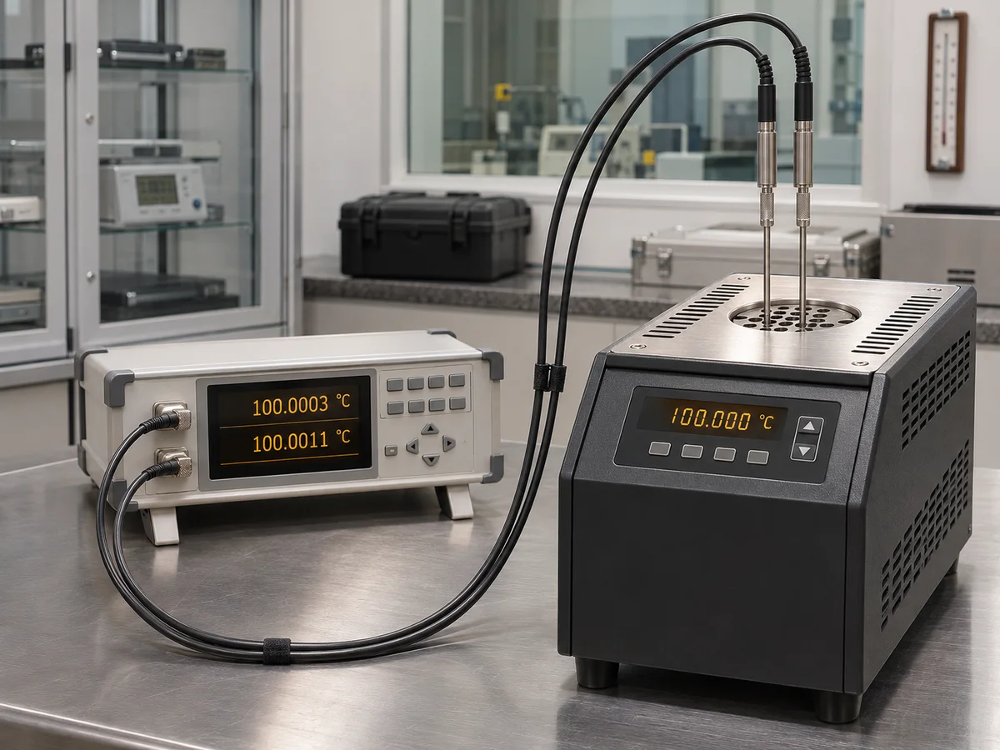
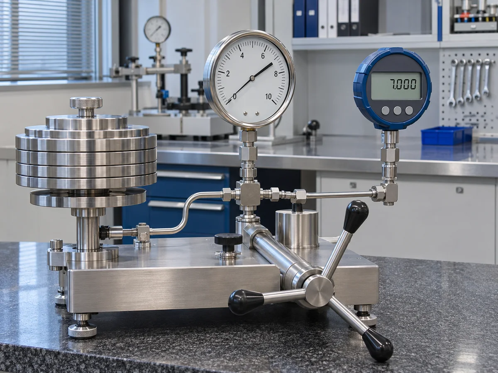
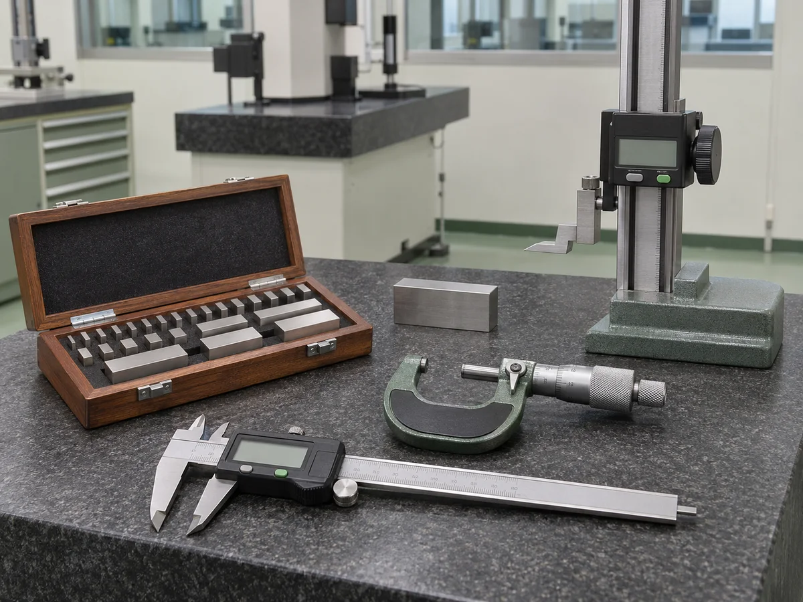
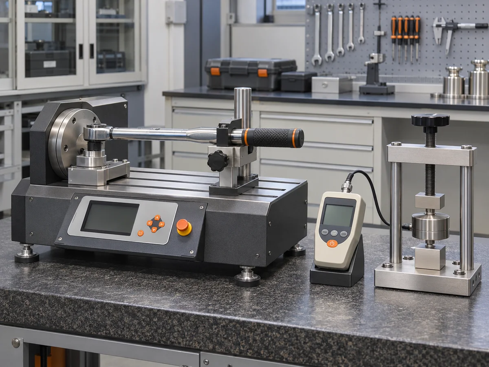
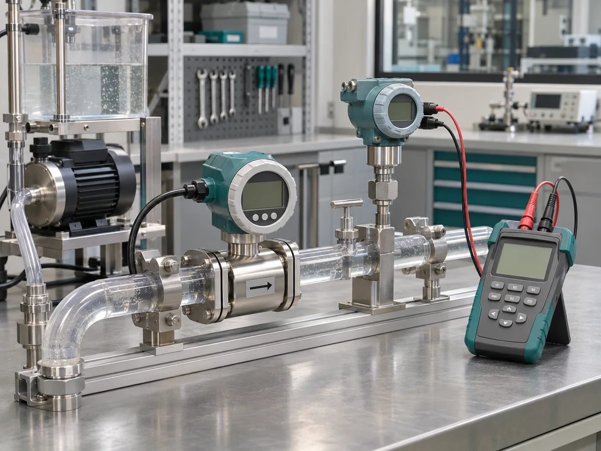

01 / Laboratory
Send instruments to the Kochi facility
Use this route for portable equipment that can be removed from service and transported for calibration.
TEFLON INSTRUMENTS PRIVATE LIMITED
Find the required measurement capability, review available ranges, and request laboratory or on-site calibration from our team in Kochi.
Search by instrument
Find a capability by name, range or technical keyword.
Review scope details
See the information listed for each parameter before enquiring.
Send one clear brief
Share multiple requirements through the comparison or quote tools.
Calibration capabilities
We have kept this page short. The complete parameter list, technical ranges, search, and comparison tools are available on the dedicated scope page.
Open full calibration scope
Voltage, current, resistance, frequency, power, energy and related measurements.

Temperature, humidity, sensors, transmitters and thermal equipment.

Positive pressure, vacuum and differential pressure instruments.

Length, thickness, height, depth and diameter instruments.

Force, tension, compression and torque measurement equipment.

Mass, flow, speed, time, sound, vibration, light, laboratory and process instruments.
Plan the service
Start with the equipment, operating range and location. The appropriate service route can then be discussed with the team.
01 / Laboratory
Use this route for portable equipment that can be removed from service and transported for calibration.
02 / On-site
For fixed assets or equipment where transport is impractical. Share the site, asset list and access constraints for review.
02 // Why choose us
Delivering precision calibration, national standards traceability, and rapid turnaround for local industry.
Metrology is the Science of measurement, Precision and Accuracy is Our Business
— TEFLON INSTRUMENTS PRIVATE LIMITED
03 // How it works
Our straightforward calibration process ensures accuracy, unbroken traceability, and audit compliance.
Specialized material handlers or secure couriers collect the sensitive instruments directly from your facility or shipping dock.
The equipment is processed in an accredited, climate-controlled laboratory using traceable standards to ensure exact accuracy.
The instruments are returned directly to your facility, usually accompanied by the agreed calibration documentation.
Industries served
Teflon Instruments Private Limited
Based in Kakkanad, Kochi, the company provides calibration, certification, and maintenance support across a broad measurement portfolio.
Share the make, model, parameter, range, and quantity.
Discuss laboratory or on-site service based on the equipment.
Verify the scope, documentation, schedule, and location before proceeding.
Before you enquire
Clear identification reduces back-and-forth and helps the technical team review the correct instrument.
Add the operating range, critical points and any process limits that matter to your application.
Note fixed equipment, shutdown windows, site requirements and the preferred service route.
Contact Teflon Instruments
Include the make, model, range, quantity, location, and any timing or documentation requirements.
No. 1153, Peringattu, Chembumukku
Kakkanad, Kochi – 682021, Kerala